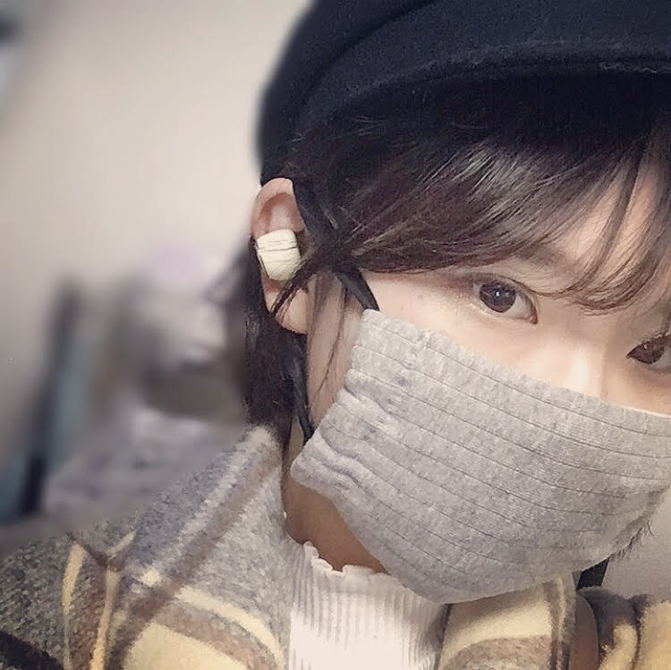

About
♢幸せを届ける自由人♢
青蜂ユキ(愛称:はっち)と申します。
豊かな心と日常で幸せの輪を広げて
今よりちょっと優しい世界に
マルチなスキルで"スキ"をシェアして想いを繋ぐ
何でも屋クリエイターです。
『暮らしを旅する』をテーマに旅をしながら生活をしていて
たくさんのご縁の中で"誰かのために"なれるよう
活動させていただいております。
日々の出会いを大切に。
旅をしている時の様な心で生きる"心トラベラー"として
YouTubeやSNSでも発信をしていますので
覗きに来ていただけたら嬉しいです。

Name ： 青蜂ユキ
Birthday ： 1998.4.23
Residence ： 東京都浅草
Job ： 何でも屋クリエイター(フォトグラファー など)
Hoby ： 写真、旅、料理
Hitokoto ：イメージカラーは"暖かいカラフル"です！
人に優しく誰かの心を躍らせるような春風の様な人になりたいと思っています。
Follow Me!!
Twitter、Instagram、Facebook、Youtube、
どなたでもフォローお待ちしております。